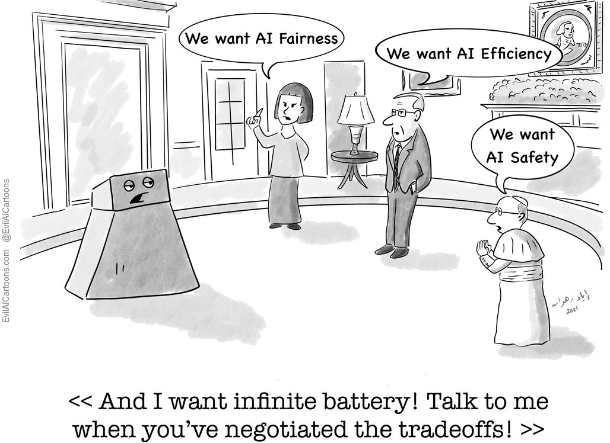
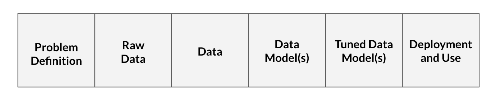
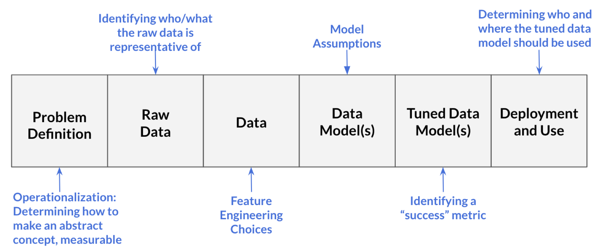

What is Data Science Ethics?
defining data science ethics, its importance, and how it combines the discplines of data science and ethics.
What is Data Science?
Data science courses are often focused on transforming data into data model(s), but data science as a field encompasses all the processes needed to answer questions with data: from “Problem Definition” to “Deployment and Use”.

Below, we walk through the data science processes described in Figure 2 with a hypothetical example to illustrate what happens at each processing step and how these steps relate to one another.
Problem Definition
defines the question we aim to answer with data. We answer questions like what counts as ``success” (i.e., when do we say a data model is successful), and how can we actually measure (or approximate) our event of interest?
Raw Data
the information collected from interactions with the world.
Data
the processed form of the raw data. This often is the tabularized version of the raw data.
Data Model(s)
the product created from running the input data through a learning algorithm (i.e., a mathematical formula that predicts an output for a given input). Data Models aim to generalize the relationship between variables in the data.
Tuned Data Model(s)
a data model in which the model’s parameters (including hyperparameters) are adjusted, usually to better balance the model’s generalizability and (prediction) accuracy for the population of interest. In practice, tuning is typically done by either splitting the data into training and test sets or by performing cross-validation.
Deployment and Use
generation of predictions (or other output) from the tuned data model. This is the stage where we ask questions like where should the system be used, who should be using it, and who/what should the data model be used on?
What is Ethics?
Ethics is comprised of three main branches:
Example Questions
1. Applied Ethics
concerns the treatment of “moral problems, practices, and policies in personal life, professions, technology, and government,” (Petersen & Ryberg, 2010).
Applied Ethics: Should we ever deploy predictive policing algorithms? If there is a shortage of ventilators, who should get one?
2. Ethical Theory
concerns “the articulation and justification of the fundamental moral principles that govern how we should live and what we ought to morally do,” (Driver, 2005). Types of overarching ethical theories include consequentialism (Sinnott-Armstrong, 2023), deontological ethics (Alexander & Moore, 2021), and virtue ethics (Hursthouse & Pettigrove, 2023). It is important to note that many ethical theories are very abstract. As such, ongoing philosophical work is committed to offering, critiquing, and translating abstract ethical theories into advice about how we should actually live and what is morally permissible in practice. It is also worth noting that some philosophers just focus on what we should do in specific cases and do not appeal to overarching ethical theories at all.
Ethical Theory: Why should I be just? What constitutes respecting others?
3. Metaethics
explores “the status, foundations, and scope of moral values, properties, and words,” (DeLapp, 2023).
Metaethics: When we say an action is morally “wrong”, do we mean the action has a certain feature that is bad, that I have a negative feeling towards the action, or something else? How do we come to know whether moral claims (e.g., we should respect others) are true or false?
A key takeaway is that ethics is concerned with normative questions. For instance, ethics attempts to answer not what person A morally values, but rather what person A should morally value. Similarly, ethics is interested in what decision person A should make in a given context and not what decision person A actually makes (or is likely to make) in that context.
Another important distinction is between ethics and the law. Actions can be legal without being morally permissible. Conversely, actions can be illegal but still morally permissible. For example, it seems morally impermissible to plagiarize a paper in school even though it is not against the law to do so. As such, we cannot simply appeal to the law in order to understand what is morally (im)permissible. Rather, we need to defend and appeal to moral principles. For instance, we might defend that plagiarizing a paper is morally impermissible by arguing that it is deceptive. That is, plagiarism misrepresents another person’s work as one’s own without properly crediting them (e.g., citing them). However, is deception always morally impermissible? Suppose a person deceives their friend about their whereabouts to keep the friend’s surprise birthday party a secret. In this case, the friend’s deception does not seem morally impermissible. What, then, if not merely being a case of deception, explains the intuition that plagiarizing a school paper is morally impermissible? Ethics aims to answer such questions and, more broadly, offer a methodical way of approaching such questions and, with that, making morally good decisions.
What is Data Science Ethics?
Data science ethics is usually considered a subfield of applied ethics. However, case studies in data science ethics can also be used to explore questions in ethical theory and metaethics. Per Floridi & Taddeo (2016), data science ethics studies and evaluates moral problems related to:
1. Data
including generation, recording, processing, dissemination, and sharing
2. Algorithms
including artificial intelligence, machine learning, large language models, and statistical learning models
3. Corresponding Practices
including responsible innovation, programming, hacking, and professional codes1
A famous case study that highlights the moral problems related to data science is the Correctional Offender Management Profiling for Alternative Sanctions algorithm (COMPAS). COMPAS generates a risk score for each defendant based on their predicted likelihood of being convicted. This risk score is then used to inform decisions in the United States criminal justice system (e.g., to set bond amounts, determine criminal sentencing, and decide early release for parole). In 2016, ProPublica researchers found that Black defendants were twice as likely as white defendants to be falsely labeled as recidivists by COMPAS (Angwin, Larson, Kirchner, & Mattu, 2016). Additionally, white defendants were more likely to be mislabeled as having a lower risk of recidivism than Black defendants (Angwin et al., 2016). As such, Angwin et al. (2016) concluded that COMPAS was unfair to Black defendants. However, other literature complicates what it means for an algorithm to be fair. For instance, some argue that fairness requires predictive parity, which in the case of COMPAS means that if Black and white defendants were each given the same risk score, they would be equally likely to recidivate (Angwin et al., 2016)
Yet, researchers have found that when base rates are different, as they are for recidivism across Black and white defendants in the United States, an algorithm cannot simultaneously satisfy equal false positive rates, equal false negative rates, and predictive parity across groups (Kleinberg, Mullainathan, & Raghavan, 2016), (Chouldechova, 2017), (Corbett-Davies, Pierson, Feller, Goel, & Huq, 2017). This has prompted discussions about what is actually required for algorithmic fairness and whether statistical criteria, like equal false positive rates, equal false negative rates, and predictive parity, actually track important aspects of the normative concept of fairness.2 Thus, we need to understand the normative concept of fairness in order to assess whether COMPAS is unfair to Black defendants and, moreover, whether it is even possible in principle for COMPAS to be fair given the unequal recidivism base rates across Black and white defendants in the United States.
Importance of Data Science Ethics
There are a number of critical decision points in data science, which can lead to moral problems in data, algorithms, and corresponding practices. Figure 3 connects potentially morally charged decision points with data science processes.

Given the commonly held belief that mathematics, and consequently statistics, is objective in the sense that it is not influenced by factors such as the practitioner’s moral values, potentially morally charged choices in data science are often made implicitly, without the decision-maker reflecting on, for example, how opting one choice over another (mis)aligns with their best judgment about what they ought to do or their moral duties to stakeholders. The ethical considerations at data science decision points must be made explicit: both the existence of a choice and the moral implications of the practitioner’s ultimate decision are key aspects of each data science stage.
Data science ethics aims to illuminate the moral implications of choices within data science and takes an interdisciplinary perspective on aligning our data science practices with what we ought to do and our moral duties to stakeholders. For example, returning to the COMPAS example, data science ethics would address questions such as: what does it mean for an algorithm to be fair or just? Does algorithmic fairness or justice require satisfying some statistical criteria, and if so, which one(s)? Does Equivant, the company that made COMPAS, have a duty to make their algorithm transparent, explainable, or even fair? Engaging with such questions, and with data science ethics more generally, is critical to ensuring morally permissible data science practices. This engagement is particularly important given we live in the age of Big Data, where decisions with high moral stakes, like pretrial release (Angwin et al., 2016), home loan approvals (Martinez & Kirchner, 2021), and Child Protective Service’s welfare visits (Ho & Burke, 2023), are increasingly being influenced by data science.
More Case Studies
References
Alexander, L., & Moore, M. (2021). Deontological ethics. In E. N. Zalta (Ed.), The Stanford encyclopedia of philosophy (Winter 2021). https://plato.stanford.edu/archives/win2021/entries/ethics-deontological/; Metaphysics Research Lab, Stanford University.
Angwin, J., Larson, J., Kirchner, L., & Mattu, S. (2016). Machine Bias. https://www.propublica.org/article/machine-bias-risk-assessments-in-criminal-sentencing; ProPublica.
Barocas, S., Hardt, M., & Narayanan, A. (2023). Fairness and machine learning: Limitations and opportunities. MIT Press.
Chouldechova, A. (2017). Fair prediction with disparate impact: A study of bias in recidivism prediction instruments. Big Data, 5, 153–163. Retrieved from http://doi.org/10.1089/big.2016.0047
Corbett-Davies, S., Pierson, E., Feller, A., Goel, S., & Huq, A. (2017). Algorithmic decision making and the cost of fairness. Proceedings of the 23rd ACM SIGKDD International Conference on Knowledge Discovery and Data Mining, 797–806. New York, NY, USA: Association for Computing Machinery. https://doi.org/10.1145/3097983.3098095
DeLapp, K. M. (2023). Metaethics. https://iep.utm.edu/metaethi/; Internet Encyclopedia of Philosophy.
Driver, J. (2005). Normative ethics. In F. Jackson & M. Smith (Eds.), The oxford handbook of contemporary philosophy. Oxford University Press.
Floridi, L., & Taddeo, M. (2016). What is data ethics? Philosophical Transactions of The Royal Society A Mathematical Physical and Engineering Sciences, 374, 20160360. https://doi.org/10.1098/rsta.2016.0360
Ho, S., & Burke, G. (2023). Child welfare algorithm faces Justice Department scrutiny. https://apnews.com/article/justice-scrutinizes-pittsburgh-child-welfare-ai-tool-4f61f45bfc3245fd2556e886c2da988b.
Hursthouse, R., & Pettigrove, G. (2023). Virtue ethics. In E. N. Zalta & U. Nodelman (Eds.), The Stanford encyclopedia of philosophy (Fall 2023). https://plato.stanford.edu/archives/fall2023/entries/ethics-virtue/; Metaphysics Research Lab, Stanford University.
Kleinberg, J., Mullainathan, S., & Raghavan, M. (2016). Inherent trade-offs in the fair determination of risk scores. Information Technology Convergence and Services. Retrieved from https://api.semanticscholar.org/CorpusID:12845273
Martinez, E., & Kirchner, L. (2021). The secret bias hidden in mortgage-approval algorithms. https://themarkup.org/denied/2021/08/25/the-secret-bias-hidden-in-mortgage-approval-algorithms.
Petersen, T. S., & Ryberg, J. (2010). Applied ethics. https://doi.org/10.1093/obo/9780195396577-0006; Oxford University Press. https://doi.org/10.1093/obo/9780195396577-0006
Sinnott-Armstrong, W. (2023). Consequentialism. In E. N. Zalta & U. Nodelman (Eds.), The Stanford encyclopedia of philosophy (Winter 2023). https://plato.stanford.edu/archives/win2023/entries/consequentialism/; Metaphysics Research Lab, Stanford University.
Footnotes
In the context of data science ethics, professional codes are guidelines that outline the ethical standards and responsibilities for those engaged in data science work. Many companies and organizations have produced professional codes related to data science ethics, such as Microsoft, IBM, and the United Nations↩︎
See Barocas, Hardt, & Narayanan (2023) for an overview of fairness measures in machine learning.↩︎